A naive approach would be to select the optimal value of  according to the objective function, namely the value of
according to the objective function, namely the value of  that minimizes RSS. Defining
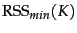 as the minimal RSS of all clusterings with
that minimizes RSS. Defining
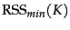 as the minimal RSS of all clusterings with  clusters, we observe that
is a monotonically decreasing function in
clusters, we observe that
is a monotonically decreasing function in  (Exercise 16.7 ), which reaches its minimum 0 for 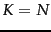 where
(Exercise 16.7 ), which reaches its minimum 0 for 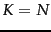 where  is the number of documents. We would end up with each document being in its own cluster. Clearly, this is not an optimal clustering.
is the number of documents. We would end up with each document being in its own cluster. Clearly, this is not an optimal clustering.
A heuristic method that gets around this problem is to estimate
as follows. We first perform  (e.g.,
(e.g.,  ) clusterings with
) clusterings with  clusters (each with a different initialization) and compute the RSS of each. Then we take the minimum of the
clusters (each with a different initialization) and compute the RSS of each. Then we take the minimum of the  RSS values. We denote this minimum by
RSS values. We denote this minimum by
 . Now we can inspect the values
. Now we can inspect the values
 as
as  increases and find the ``knee'' in the curve - the point where successive decreases in
increases and find the ``knee'' in the curve - the point where successive decreases in
 become noticeably smaller. There are two such points in Figure 16.8 , one at 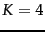, where the gradient flattens slightly, and a clearer flattening at 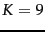. This is typical: there is seldom a single best number of clusters. We still need to employ an external constraint to choose from a number of possible values of
become noticeably smaller. There are two such points in Figure 16.8 , one at 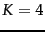, where the gradient flattens slightly, and a clearer flattening at 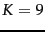. This is typical: there is seldom a single best number of clusters. We still need to employ an external constraint to choose from a number of possible values of  (4 and 9 in this case).
(4 and 9 in this case).
A second type of criterion for cluster cardinality imposes a penalty for each new cluster - where conceptually we start with a single cluster containing all documents and then search for the optimal number of clusters  by successively incrementing
by successively incrementing  by one. To determine the cluster cardinality in this way, we create a generalized objective function that combines two elements: distortion , a measure of how much documents deviate from the prototype of their clusters (e.g., RSS for
by one. To determine the cluster cardinality in this way, we create a generalized objective function that combines two elements: distortion , a measure of how much documents deviate from the prototype of their clusters (e.g., RSS for  -means); and a measure of model complexity . We interpret a clustering here as a model of the data. Model complexity in clustering is usually the number of clusters or a function thereof. For
-means); and a measure of model complexity . We interpret a clustering here as a model of the data. Model complexity in clustering is usually the number of clusters or a function thereof. For  -means, we then get this selection criterion for
-means, we then get this selection criterion for  :
:
The obvious difficulty with Equation 195 is that we need to determine . Unless this is easier than determining  directly, then we are back to square one. In some cases, we can choose values of that have worked well for similar data sets in the past. For example, if we periodically cluster news stories from a newswire, there is likely to be a fixed value of that gives us the right
directly, then we are back to square one. In some cases, we can choose values of that have worked well for similar data sets in the past. For example, if we periodically cluster news stories from a newswire, there is likely to be a fixed value of that gives us the right  in each successive clustering. In this application, we would not be able to determine
in each successive clustering. In this application, we would not be able to determine  based on past experience since
based on past experience since  changes.
changes.
A theoretical justification for Equation 195 is the Akaike Information Criterion or AIC, an information-theoretic measure that trades off distortion against model complexity. The general form of AIC is:
For  -means, the AIC can be stated as follows:
-means, the AIC can be stated as follows:
To derive Equation 197 from Equation 196 observe that 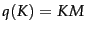 in  -means since each element of the
-means since each element of the  centroids is a parameter that can be varied independently; and that
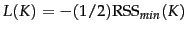 (modulo a constant) if we view the model underlying
centroids is a parameter that can be varied independently; and that
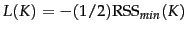 (modulo a constant) if we view the model underlying  -means as a Gaussian mixture with hard assignment, uniform cluster priors and identical spherical covariance matrices (see Exercise 16.7 ).
-means as a Gaussian mixture with hard assignment, uniform cluster priors and identical spherical covariance matrices (see Exercise 16.7 ).
The derivation of AIC is based on a number of assumptions, e.g., that the data are . These assumptions are only approximately true for data sets in information retrieval. As a consequence, the AIC can rarely be applied without modification in text clustering. In Figure 16.8 , the dimensionality of the vector space is 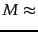 50,000. Thus,
 dominates the smaller RSS-based term (
dominates the smaller RSS-based term (
 , not shown in the figure) and the minimum of the expression is reached for 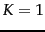. But as we know, (corresponding to the four classes China, Germany, Russia and Sports) is a better choice than . In practice, Equation 195 is often more useful than Equation 197 - with the caveat that we need to come up with an estimate for .
, not shown in the figure) and the minimum of the expression is reached for 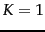. But as we know, (corresponding to the four classes China, Germany, Russia and Sports) is a better choice than . In practice, Equation 195 is often more useful than Equation 197 - with the caveat that we need to come up with an estimate for .
Exercises.